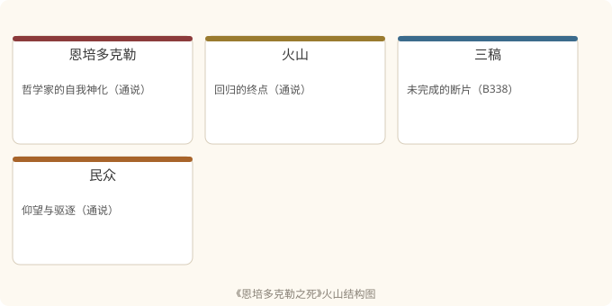

恩培多克勒之死
一、基本信息
| 作者 | 弗里德里希·荷尔德林 |
|---|---|
| 成书/出版 | 约1798年起（Britannica B338：Der Tod des Empedokles——begun c. 1798——first version nearly complete, fragments of 2nd and 3rd versions survive） Friedrich Holderlin — Encyclopaedia Britannica（百科全书） |
| 国别/地区 | 德国 |
| 时代 | 近代 · 18世纪90年代末 |
| 体裁 | 戏剧诗（未完成三稿） |
| 语言 | 德语 |

《恩培多克勒之死》火山结构图（主题·结构图）
二、创作背景
Britannica（B338）：恩培多克勒之死——约1798年起——第一稿接近完成，第二、三稿存断片。
Britannica（B338）：荷尔德林——'a prophet of spiritual renewal, of "the return of the gods"'。
题材（通说待核）：哲学家恩培多克勒投身埃特纳火山——神人与民众的悲剧。
三、内容脉络
（通说待核）恩培多克勒的放逐与民众的仰望。
（通说待核）火山之跳：'回归诸神'的终局。
四、主要人物表
| 人物 | 身份 | 说明 |
|---|---|---|
| 恩培多克勒 | 哲学家 | （B338 书名人物） |
| 民众 | 合唱 | （通说待核） |
五、主题与艺术特点
- '神与人'的界限（通说待核）。
- 火山的浪漫主义死亡（通说待核）。
- 戏剧诗的三稿（B338：fragments of 2nd and 3rd versions）。
六、影响与评论
- Britannica：三稿存断片（B338）。
Friedrich Holderlin — Encyclopaedia Britannica（百科全书） - Britannica：'uniquely expressive style'（B338 作者级）。
Friedrich Holderlin — Encyclopaedia Britannica（百科全书）
七、阅读建议
难点
- 三稿的版本比较。
- 前苏格拉底哲学语境。
- 《恩培多克勒之死》中译本（人民文学等——通说待核）。
- 德文原版（公有领域）。
荷尔德林戏剧尝试；与《许珀里翁》对读。
八、待核实
- 三稿年份（1797-1799说）待核。
- '火山之死'传说细节待核。
- 希腊哲学原型（阿格里真托的恩培多克勒）待核。